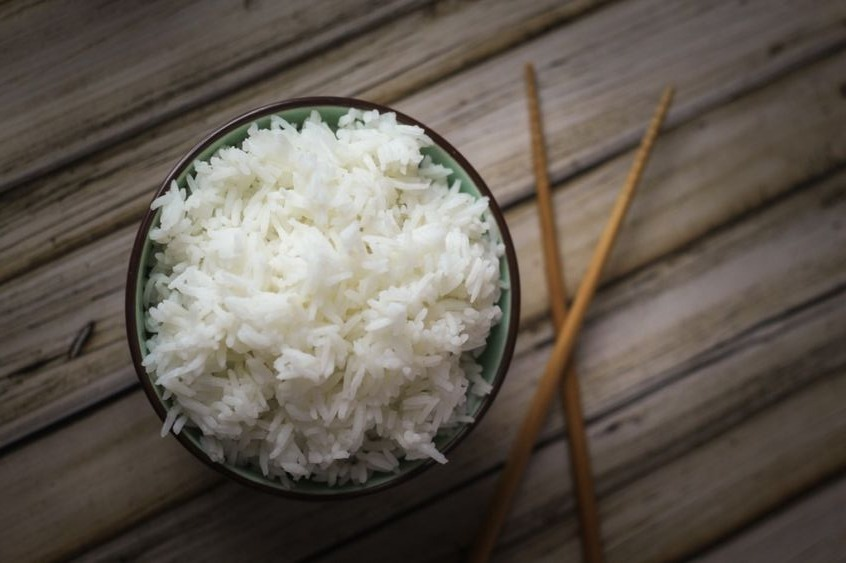

Awesome Filipino food!
Filipino food is a mix of Asian and Western influences transformed through local cooking techniques. Boasting proud indigenous flavors, rich traditions and eating practices unique to the country, Filipino cuisine is distinct, delicious and unlike anything you’ll have tasted elsewhere. Here are things to know about Filipino cuisine.
It's never a meal without rice
Rice (particularly white rice), is considered the ultimate staple in Filipino food. It is present in every household and is more than likely part of every Filipino’s meal – breakfast, lunch and dinner. Because of its plain, starchy flavor, it pairs well with a lot of salty and sour local dishes. Filipinos love rice so much that they would consume it whether it’s traditionally cooked white rice (kanin), burnt rice (tutong), left-over rice (bahaw) or fried rice (sinangag). Restaurants and fast food chains catering to Filipinos based out of the country make sure that rice is always part of their menu. Sarap.
We Filipinos are renowned for having good morals, being hospitable, working hard, and being able to meet any adversities in life with a smile. We are also known to have a strong passion for food, to the point that we view it as a pastime. The last statement, while covering the majority, obviously does not apply to everyone. Let's discuss our favorite Filipino dishes that many people loved to eat.